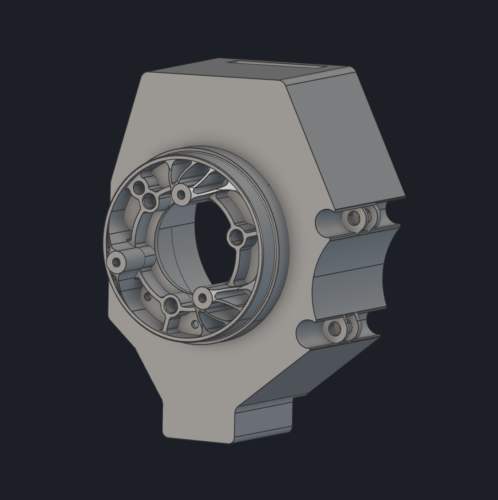
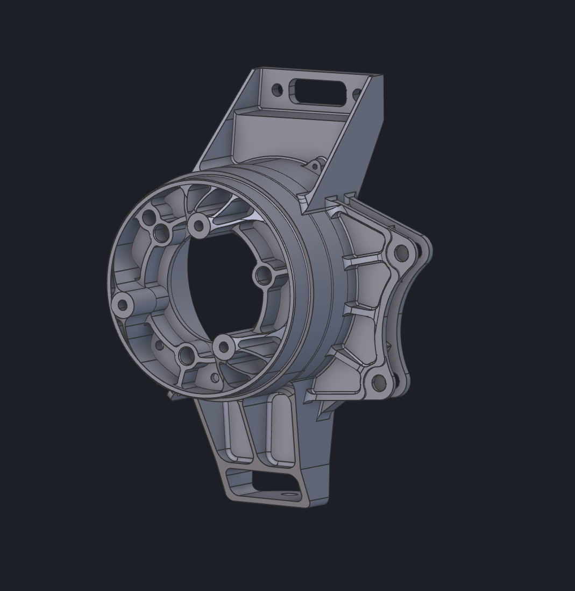

Upright topology optimization In progress
- Where
- HyTech Racing, Georgia Tech Formula SAE
- When
- Summer 2026 – Present
- Role
- Powertrain engineer
- Tools
- nTop, CATIA, MATLAB


I am in the process of building an nTop topology optimization workflow for the vehicle's front upright, with the goal of generating a lightweighted upright suitable for additive manufacturing in Ti-6Al-4V. The workflow defines the preserved interfaces and boundary conditions, with loads and restraints for five combined load cases. Before optimizing, I validated the nTop model against the existing FEAs by matching von Mises stress and displacement.